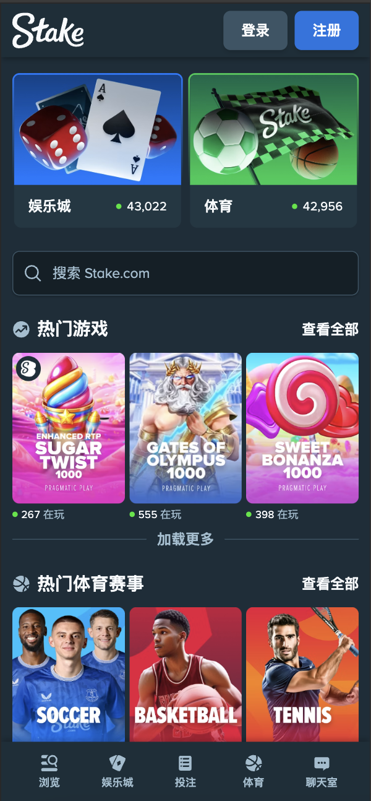
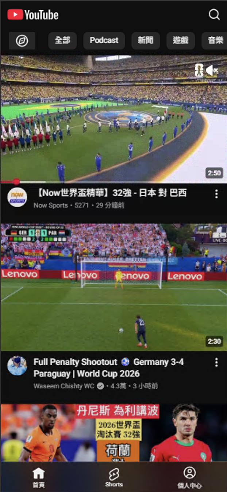
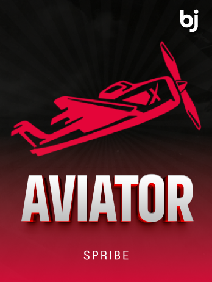
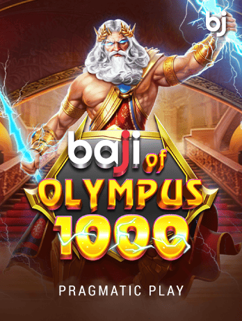

圖片載入優化
從「網路」與「網頁大小」兩條線下手——網路自適應載入＋格式轉換。
網頁載入很久——問題出在哪？
用戶反映「網頁開很慢」。拆開來看，載入慢不外乎兩個原因：不是網路太慢，就是網頁本身太大。這份提案就從這兩條線各自找解法。
→ 網路自適應載入
→ 格式轉換
先談網路這條線，再回頭處理網頁大小。
先把我們的網站，跟其他人比比看


| 網站 | 總傳輸 | Load | Finish | 差距 |
|---|---|---|---|---|
| YouTube | 8.6 MB | 3.08s | 15.49s | +12.4s |
| Stake | 4.7 MB | 4.65s | 17.59s | +12.9s |
| Baji · 本站 | 22 MB | 2.37s | 25.46s | +23.5s |
三網站完整對比 — 肥在「圖片」
| 分類 | Stake | Baji · 本站 | YouTube |
|---|---|---|---|
| JS | 3,765 kB | 5,443 kB | 2,959 kB |
| Img 圖片 | 422 kB | 13,393 kB | 421 kB |
| Fetch / XHR | 20.5 kB | 2,369 kB | 5,270 kB |
| 總傳輸 | 4.7 MB | 22 MB | 8.6 MB |
對應這兩個問題，我們提兩個方向
主要市場行動網速落差懸殊
落差懸殊——對照台灣（~114 Mbps），巴基斯坦、孟加拉只到 3G～入門 4G 等級，正是自適應要服務的對象。
網路自適應載入
看網路給圖——好網給高品質、弱網給輕量圖，服務孟加拉／巴基斯坦的網速落差。
什麼是網路自適應載入？
偵測使用者當下的網路品質，動態給對應的圖：好網路給高解析、高品質；弱網路給輕量小圖——讓每個人都先看得到、不卡在大檔上。
navigator.connection 的 effectiveType（2G/3G/4G）或 HTTP Client Hints，判斷當下連線品質。對前面提到的孟加拉、巴基斯坦弱端用戶尤其有感——同一張圖，不必所有人都扛 3x 大檔。
看網路給圖 — 現場切換比較
網路自適應載入 — 各組怎麼做
| 角色／組 | 負責項目 |
|---|---|
| 🎨 設計 | 訂各網路階尺寸／可接受畫質、弱網可視性把關 |
| 💻 前端 | navigator.connection 偵測選圖、監聽 change、Safari fallback |
| ⚙️ 後端 | 預生成各尺寸圖／CDN on-the-fly resize，回對應 URL |
| 🌐 網路組 | CDN Image Resizing、邊緣快取、Client Hints（Accept-CH） |
| 📊 工作預期 | M 中 · 風險中 · Phase 2 前端＋網路組主責，Safari／CDN 需留意 |
網路自適應能幫我們什麼？
弱網吃原圖最痛——看網路給圖，先給輕量圖，每個人先看得到、再看得清。
同一張圖，各網路下載量比較
同一張圖，2G 只下載 147 KB、3G 291 KB，4G 才給 893 KB 原圖——弱網先給輕量圖，最高省約 84%。
網頁的大小
處理完網路，回頭看網頁本身——真正被下載的內容有多大？主角是圖片。
目前網站載入的圖片太大
從首頁隨手挑 6 張遊戲封面，實際量測下載量（瀏覽器 blob.size）：
針對網頁容量，可以怎麼努力？
圖片佔了首頁下載量的大宗。要讓「下載的內容」變小，主要有兩個方向——先看第一個直覺想法，再看真正採用的解法。
評估後不採用（下一頁說明原因）。
本次採用。
我們討論過 Responsive Images（1x / 2x / 3x）
為了解決圖片太大，第一個想到的是 Responsive Images——依裝置 DPR 給不同解析度版本。同樣 6 張圖，切換 1x / 2x / 3x，觀察 6 張合計流量差距；理論上弱裝置拿小圖、省流量。
瀏覽器會依螢幕 DPR 自動選版本。但要先確認——我們的用戶實際上是什麼裝置？
用戶實際 DPR 分布
| 解析度 | 佔比 | 裝置 | DPR | 倍速圖 |
|---|---|---|---|---|
360×800 | 38.22% | Samsung Galaxy A 系列、Redmi Note、OPPO A 系列 | 3 | 3x |
385×854 | 12.93% | Galaxy A54/A55、部分 vivo、Redmi | 3 | 3x |
393×873 | 10.82% | iPhone 14 Pro、15 Pro | 3 | 3x |
360×806 | 10.30% | 多數 Android（Chrome Dynamic Toolbar） | 3 | 3x |
412×915 | 9.19% | Google Pixel 6、7、8 | 2.625 | 3x※ |
375×812 | 8.03% † | iPhone X、XS、11 Pro | 3 | 3x |
414×896 | 1.70% † | iPhone XR、11 | 2 | 2x |
PNG vs JPG vs WebP — 6 張實測

… …
…
…客戶在乎遊戲畫面呈現 → 大量使用 PNG
為了保留遊戲封面的清晰度與呈現品質，輸出時採用 PNG；加上後台檔案規範，目前上圖以 PNG 為主——無損、未壓縮、體積偏大。
同一批圖 × 三種格式 — 肉眼分得出來嗎？
色差熱力圖 — 轉檔後差異有多小？
逐像素比對轉檔版與原始 PNG 的顏色差（×5 放大）。藍=幾乎無差異、紅=差距大。ΔE 越小代表越接近原圖。
格式轉換 — 各組怎麼做
| 角色／組 | 負責項目 |
|---|---|
| 🎨 設計 | 訂視覺無損標準（q≥95/lossless）、色差驗收、透明背景規則 |
| 💻 前端 | <picture> ＋ WebP/JPG fallback，封裝共用元件 |
| ⚙️ 後端 | 批量轉檔 Sharp/pngquant，上稿自動產 WebP+JPG |
| 🌐 網路組 | CDN format=auto／Polish、快取與儲存 |
| 📊 工作預期 | M 中 · 風險低 · Phase 1 後端＋前端主責，主流即受益 |